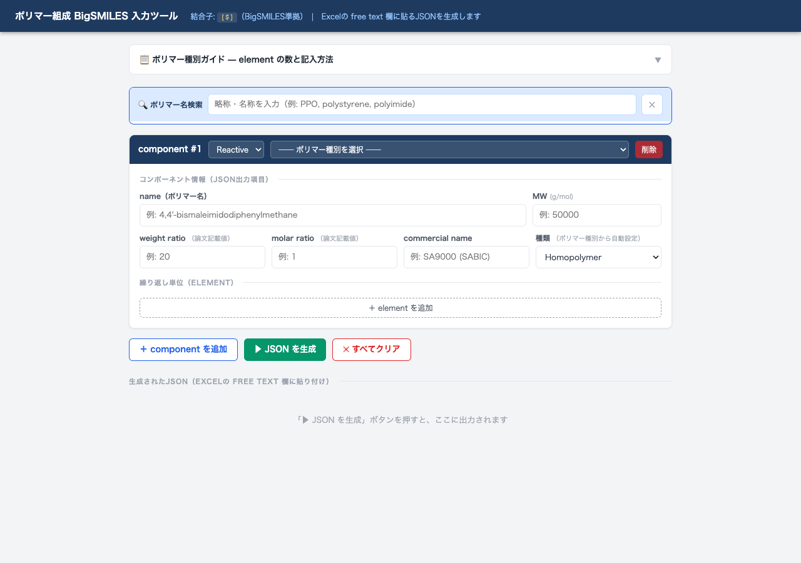
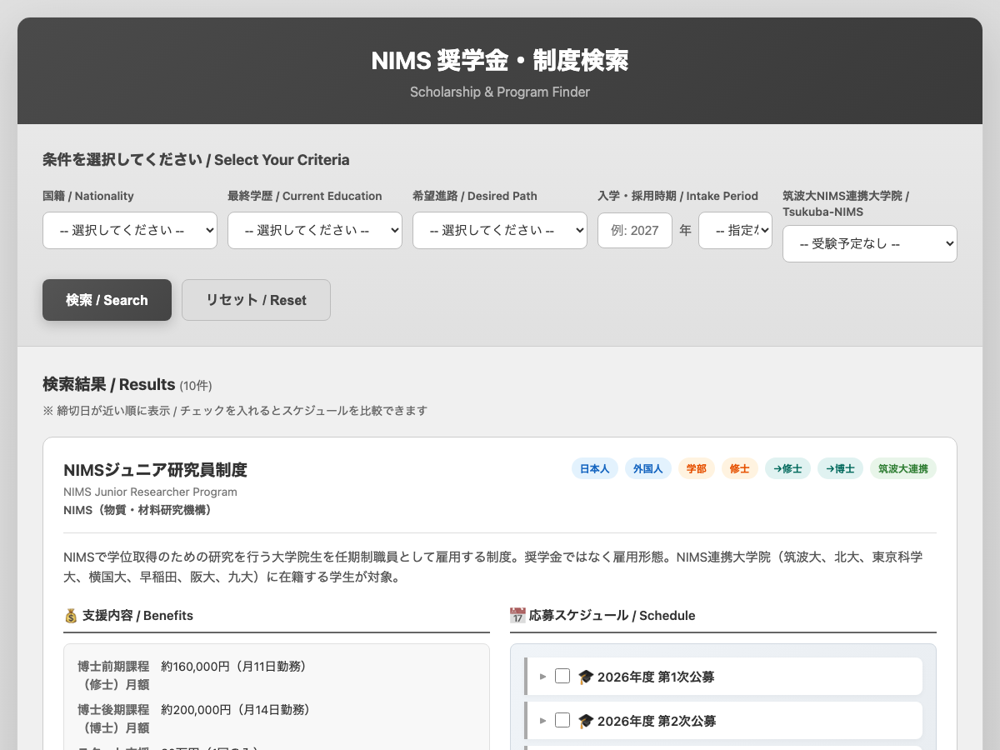
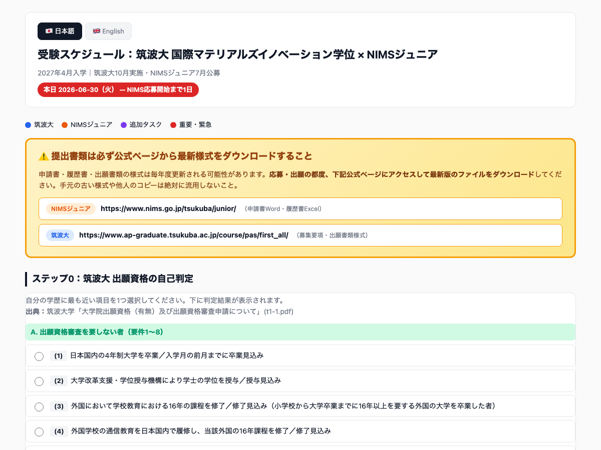
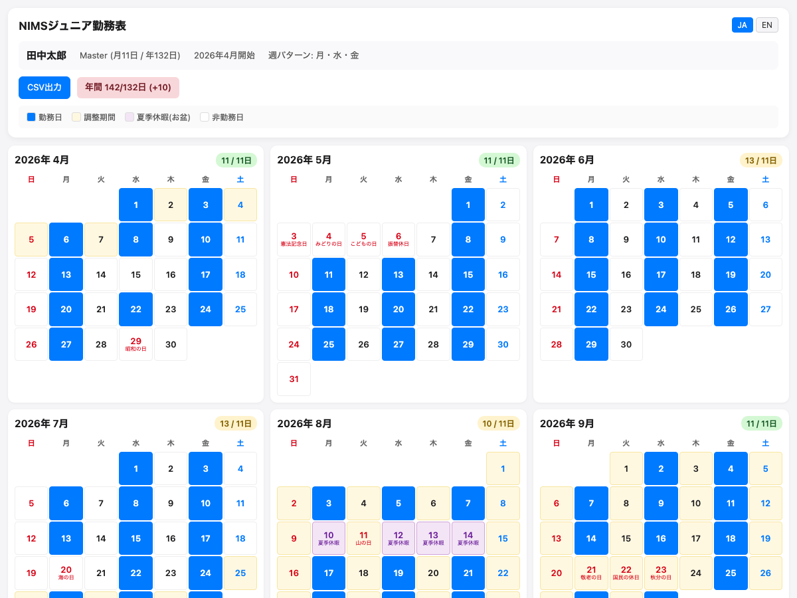
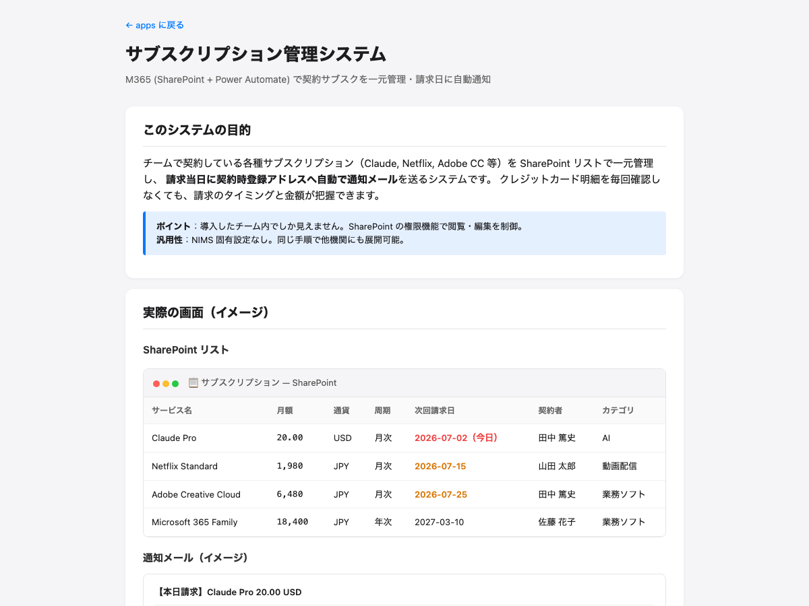

Research Support

ポリマー組成 BigSMILES 入力ツール
ポリマー組成を BigSMILES 記法で入力し、データベース登録用 JSON を生成するツール。主要 26 種のプリセット、略称・商品名検索（Noryl・Kapton 等）に加え、構造式画像を検索窓にドロップすると Gemini Vision で SMILES を自動抽出。PubChem 連携で化合物名 ⇄ SMILES 相互変換、Gemini によるモノマー逆推定、SmilesDrawer での構造プレビューに対応。Issue Form 経由で GitHub 上の共有 DB に新規ポリマー・モノマーを追加でき、PR レビューを経て全ユーザーに反映される。結合子は
[$]（BigSMILES 準拠）。
.user.js
Tampermonkey
Starrydata2 Open Access Filter
Starrydata2 の paperlist ページに OA バッジ・ライセンス表示を追加するユーザースクリプト。Unpaywall API で全論文を判定し、CC BY / CC0 のみ絞り込み、CSV エクスポート、Editor（キュレーター）名でのオンデマンド検索に対応。結果は IndexedDB に 30 日キャッシュされ、30k 件規模のプロジェクトでも動作。Tampermonkey 拡張がインストール済みの Chrome / Edge / Firefox で「開く」を押すと自動でインストール画面が開きます。
.user.js
Tampermonkey
Starrydata2 Summary Chart Resize
Starrydata2 の summary（report）ページの Chart.js グラフをウィンドウ幅に追従させ、カラム数（auto / 1〜6）とデータ点サイズ（0〜12px）をページ上の UI から切り替えられるようにするユーザースクリプト。設定は localStorage に保存され、次回以降も維持されます。
Office Support

NIMS 奨学金・制度検索
NIMS が募集する奨学金・研究員制度・インターン等を、国籍・最終学歴・希望進路・入学時期などの条件で横断検索できるサイト。募集要項 PDF から Gemini で自動抽出したメタデータを検索対象にしており、締切が近い順に表示。学部生からポスドクまで、日本人・外国人双方に対応。

受験スケジュール（筑波大 IMI × NIMSジュニア）
2027年4月入学に向けた出願要件・スケジュール一覧。筑波大 国際マテリアルズイノベーション学位 (10月実施) と NIMSジュニア (7月公募) の併願用。出願資格の自己判定、必要書類、締切カウントダウンをまとめて確認できます。

NIMSジュニア勤務表ジェネレータ
NIMSジュニア研究員（Master 年132日 / Doctor 年168日）の年間勤務日をカレンダーで組み立て、学生にURL共有・メール送信で配布する管理ツール。事務職員向け。週固定パターン + 調整月の自由設定 + 祝日・お盆の自動反映で、規定を満たすスケジュールを短時間で作成できます。

サブスクリプション管理システム
M365 (SharePoint リスト + Power Automate) でチームのサブスクリプション契約を一元管理。請求当日に契約時登録アドレスへ自動でメール通知、次回請求日も自動繰り上げ。JPY/USD/EUR 混在対応、為替は週次自動更新。